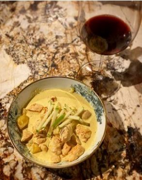

⮜⮜
Curry de volaille cuisiné au curry
Pour Personnes,
Temps de préparation : ,
Temps de cuisson : ,

Ingrédients
- 1 oignon blanc
- 2 tiges de citronnelle ou 1 citroné
- 50 g de gingembre frais (ou 25g de gingembre en poudre)
- 1 gousse d’ail, 5 cl d’huile d’olive
- 30 g de curry en poudre (ou 30g curcuma)
- 30 cl de lait de coco (ou 30g de crème fraiche)
- 1 l de crème liquide entière
- 4 blancs de volaille fermière sans peau (ou 300g de poisson blanc)
- 1 pincée de sel fin / moulin à poivre
- 5 cl d’huile de pépins de raisins (ou 5cl d’huile de tournesol)
- 25g de beurre, 3 grosses pommes de terre (ou 3 grosses carottes)
- 1 pomme granny smith
- 1/4 de citron
- 1 pincée de piment d’Espelette
Préparation
- Epluchez l’oignon et coupez le grossièrement. Dans une casserole, faites chauffer de l’huile d’olive. Ajoutez l’oignon pour le faire revenir avec de la citronnelle préalablement coupée et de l’ail. Faites colorer. Ajoutez le curry, et baissez le feu. Ajoutez ensuite la noix de coco. Faites revenir le tout en mélangeant.
- Ajoutez le lait de coco. Ajoutez ensuite la crème fraîche et laissez mijoter.
- Pendant ce temps, épluchez les pommes de terre. Coupez-les en petits morceaux. Il ne faut pas qu’elles soient trop épaisses pour qu’elles cuisent rapidement !
- Filtrez la crème : dans une cocotte, ajoutez une passoire et versez la crème dans la passoire.
- Mettez la cocotte sur le feu, et ajoutez les pommes de terre dans la sauce. Laissez mijoter.
- Coupez les escalopes de poulet en dés. Salez et poivrez. Dans une poêle, faites chauffer un filet d’huile d’olive. Quand la poêle est bien chaude, ajoutez les dés de poulet. Faites-les bien dorer.
- Dans la cocotte de sauce et pommes de terre, ajoutez le poulet qui finira de cuire tout doucement dans la sauce.
- Pendant que le poulet finit de cuire dans la cocotte, coupez la pomme verte en fines lamelles.
- Dans la cocotte, ajoutez un peu de jus de citron. Au dernier moment, ajoutez les lamelles de pomme dans la cocotte.
- Une fois que le tout est cuit, vous pouvez servir le plat, avec du riz en accompagnement si vous le souhaitez.
Remarques
Recette de Cyril Lignac